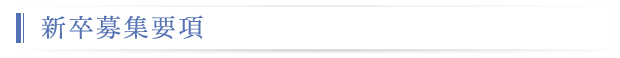

| 職種・人数 | SE及びプログラマ 10名 ＊定員になり次第、応募を締め切らせていただきます。 |
| 応募資格 | 2017年3月 大学院、大学、短大、高専、専門学校卒業予定の方 (第二新卒も歓迎します。) |
| 応募要項 |
|
| 採用学科 | 全学部全学科 |
| 選考方法 | 書類選考、適性・能力検査、面接 |
| 勤務予定地 | 東京都内 |
| 勤務時間 | 9:00～17:30 |
| 休日・休暇 | 完全週休二日(土、日)、祝日、夏季／年末年始、有給・慶弔休暇 |
| 初任給 | 大学院卒 209,800～239,800円(住宅手当含む) 大卒 198,500～228,500円(住宅手当含む) 短大/専門(2年)卒 187,400～217,400円(住宅手当含む) (情報処理有資格で初任給が異なります) |
| 諸手当 | 家族手当、役職手当、時間外手当、住宅手当、情報処理有資格者手当 その他 通勤交通費（全額）を支給 |
| 福利厚生 | 各種社会保険、企業年金保険、団体生命保険、普通傷害保険、各保養所施設 |
| その他諸制度 | 財形貯蓄、非常資金貸出制度 |